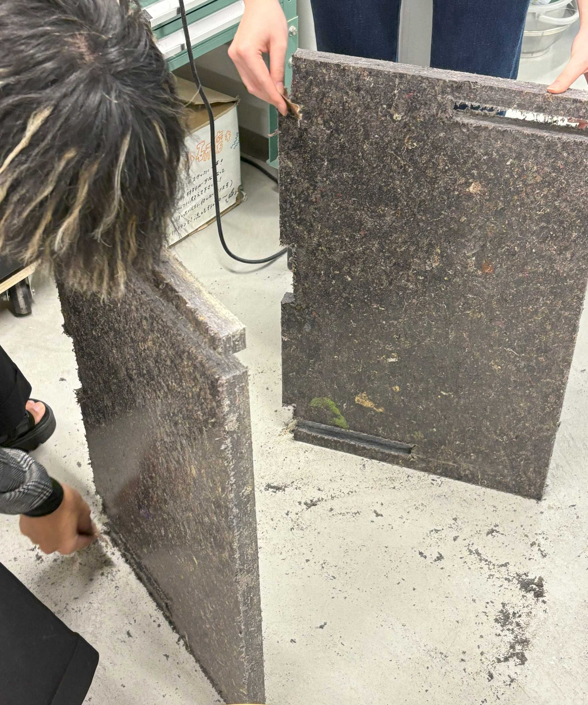
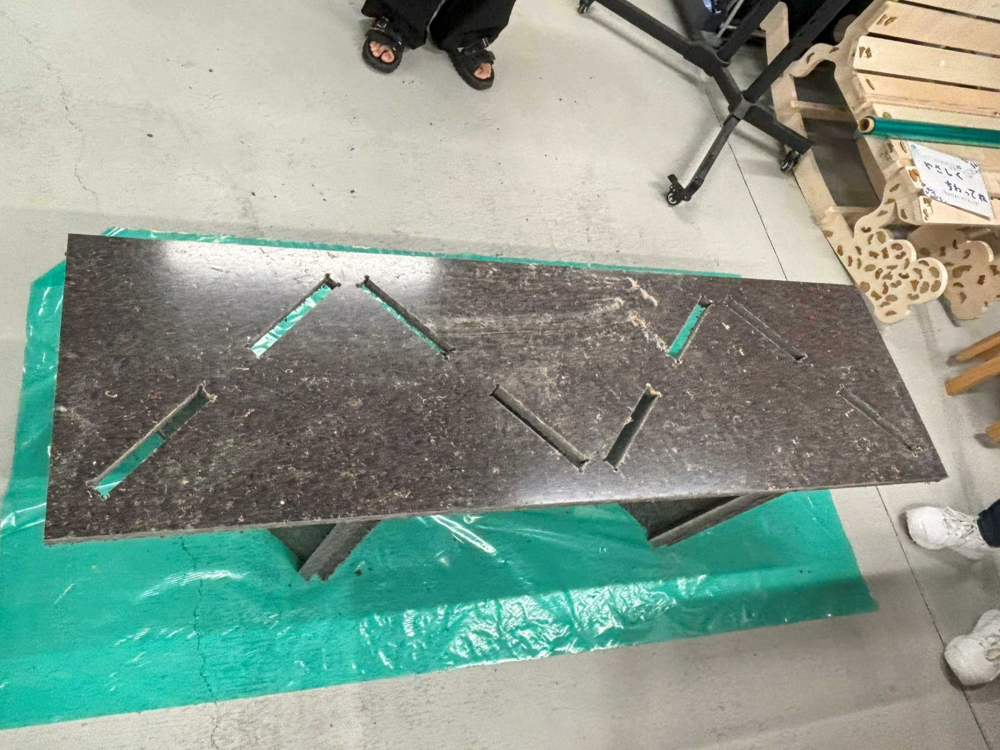
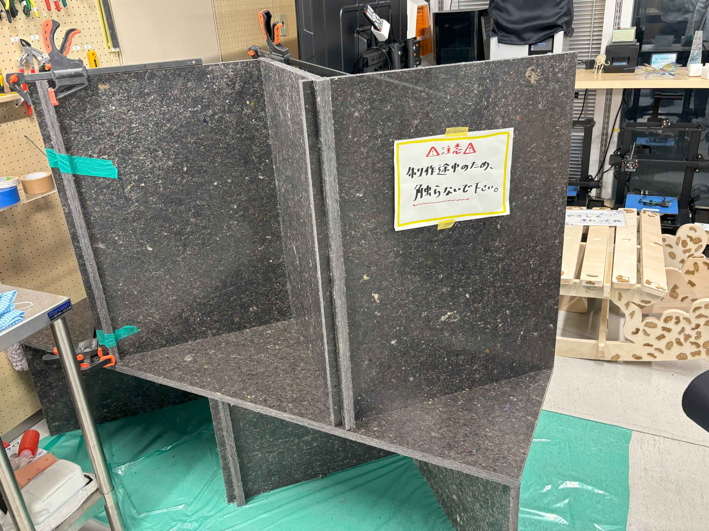

Withal circular～製作編～
設計
使用するもの
リサイクルボード(1枚900*1800)
Fusion
CNC
背もたれ・仕切りとなる上パーツ、座面パーツ、足となる下パーツで分担して設計
自分は
下パーツ
を担当
また、材料の関係で上部と下部パーツの形はM字型にすることに。(↓3Dイメージ)
fusionで設計
いよいよFusionを使って設計していきます!
fusionの設計では以下のことをポイントに作成。
point1
:パラメータを駆使する
point2
:中心線を基準に設計
point3
:CNCの切り方的に角を切り取ることができないので、角を作りたい部分には穴を作る
アセンブル
設計したパーツを複製しアセンブルで組み合わさるかを確認する
最難関の座面パーツの設計も完了したのでこちらも確認のためアセンブル!
アセンブルして少しでもずれていたら修正し、無事2パーツ完成
そして上パーツも完成し、アセンブルでズレていないことを確認
(全パーツアセンブル画像&動画)
fusionでの設計完了!
Fusionでの詳しい設計方法やアセンブルの仕方は
ミルさんのページ
を見ると分かりやすいです。
テストカット
実際に削り出す前に小さなパーツで設計したスリットと凸がはまるかを確認
出力
下側・座面パーツの切り出し
繊維からできているため、削るとめちゃくちゃ繊維がポロポロ出てきた。掃除が大変だった。

切り出すと切り口から繊維が飛び出てケバケバしてしまうので、切り出し後にやすりやハサミを使い綺麗にした。
下パーツを組み立てると以下のようになった。
座面パーツも組み合わせた。
下パーツを上から抑える形になるため、下パーツだけの時よりも安定感が増し、安心して座れた。

上パーツ
上パーツも切り出しいよいよ完成へ！

前のページに戻る
次のページへ